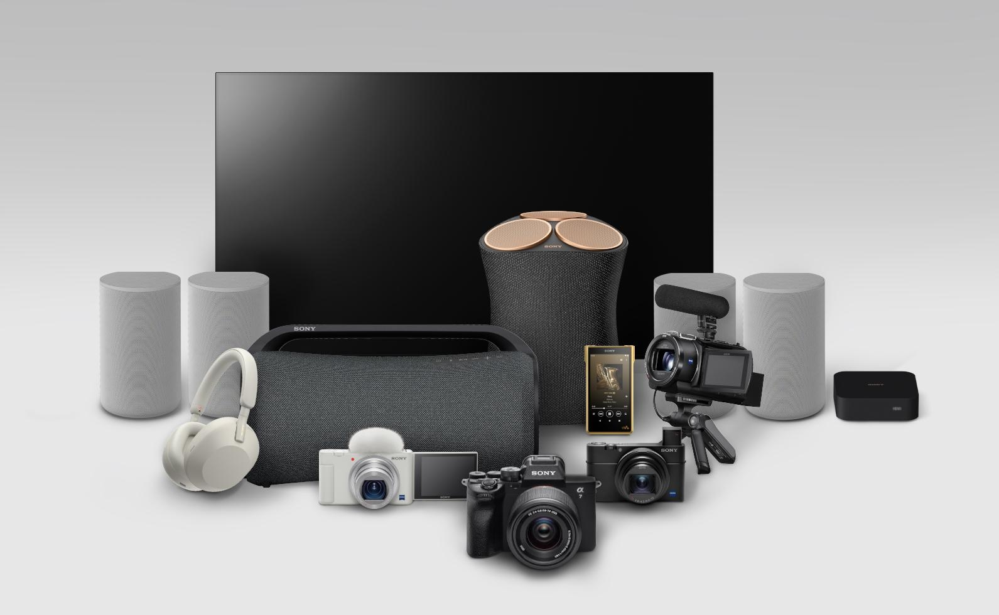
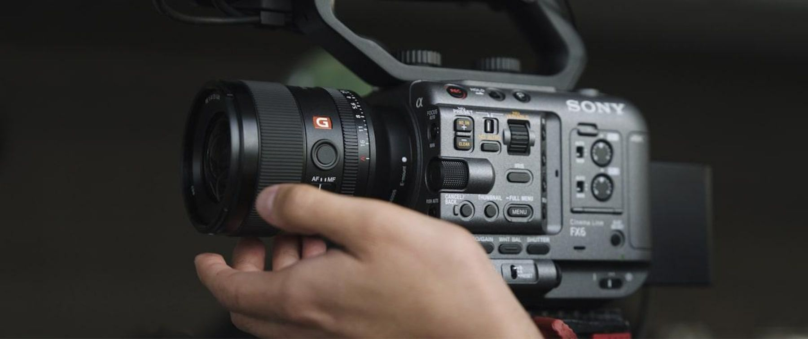
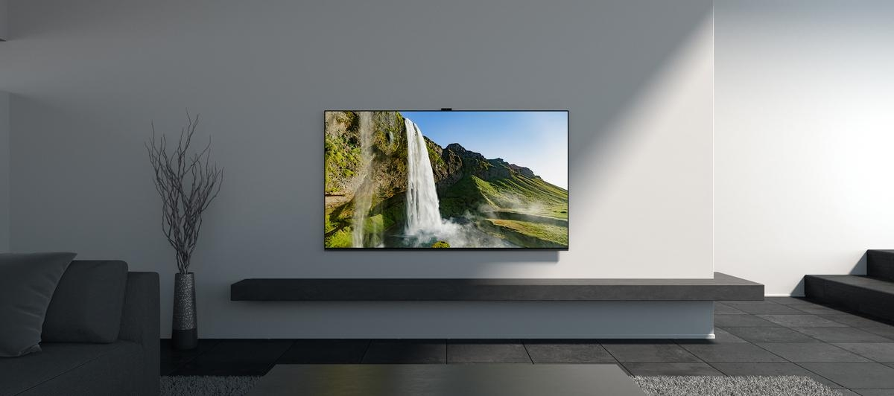
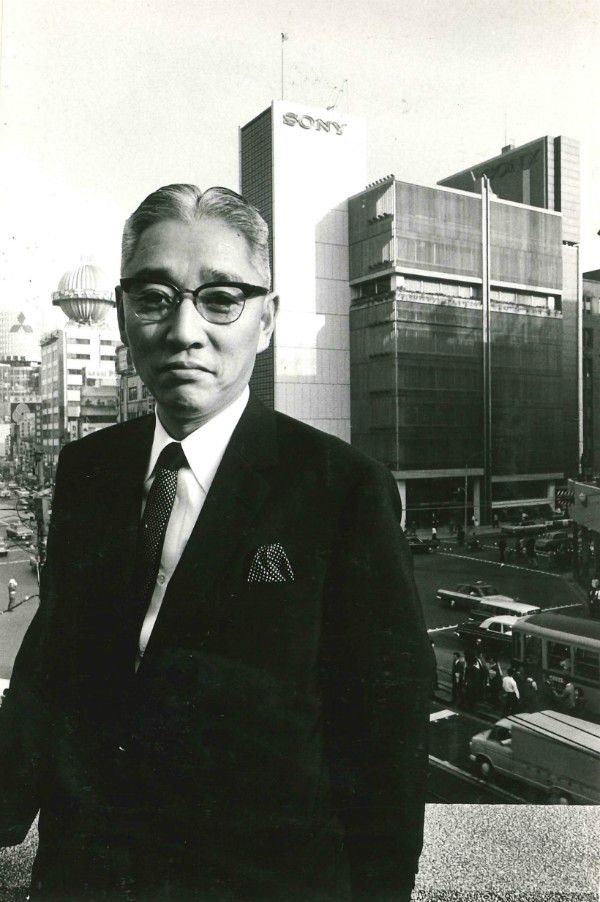
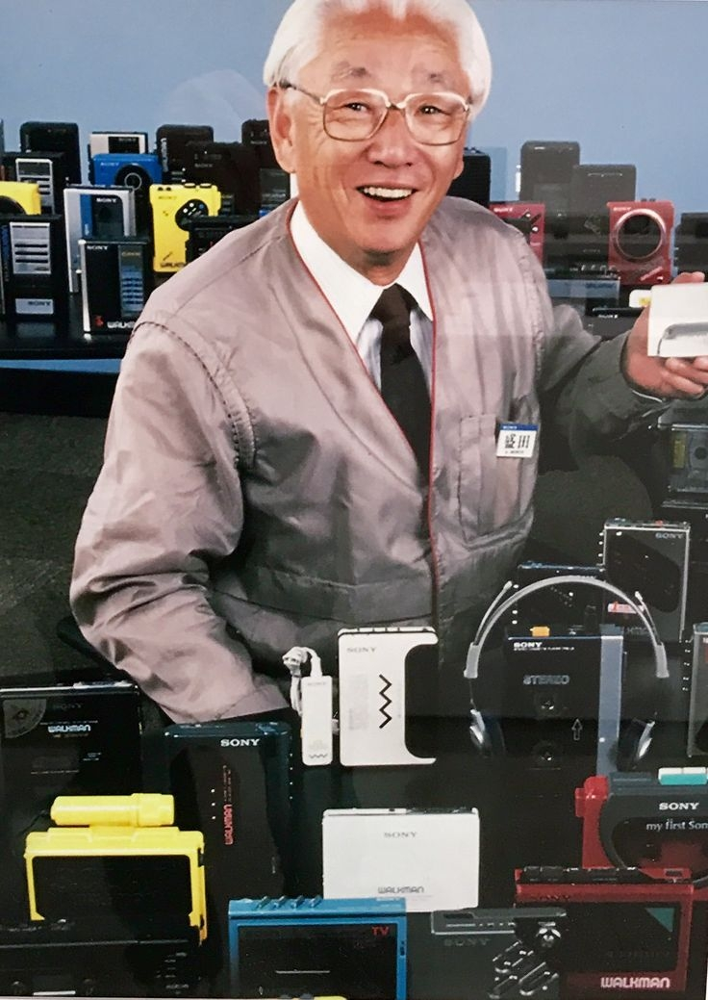

Gaming Technology
With immersive gaming, precise controls, and state-of-the-art PlayStation innovation, experience next-generation performance.
Explore Sony's latest innovations — from immersive audio to breakthrough imaging technology.
Slide 1 of 6



With immersive gaming, precise controls, and state-of-the-art PlayStation innovation, experience next-generation performance.
Sleek Xperia smartphones designed for speed, clarity, and smart mobile photography will keep you connected.
Discover rich, high‑fidelity sound powered by Sony’s industry‑leading noise cancellation and acoustic engineering.
Enjoy cinematic picture quality with BRAVIA displays featuring advanced contrast, color accuracy, and 4K/8K processing.
Enhance your setup with reliable storage solutions and essential accessories designed for seamless everyday use.
Capture every moment with Alpha cameras and lenses built for exceptional clarity, speed, and creative control.
 on X.jpeg)
Sony began as Tokyo Tsushin Kogyo, founded by Masaru Ibuka and Akio Morita. Masaru Ibuka and Akio Morita created Sony in Tokyo, Japan, on May 7, 1946. Morita contributed financial savvy and a gift for marketing, while Ibuka was an engineer and forward-thinking technologist. With just 20 workers and a starting capital of 190,000 yen, they founded the business under the name Tokyo Tsushin Kogyo, which translates to Tokyo Telecommunications Engineering Corporation. The two founders were passionate about developing useful, cutting-edge electronics for common people, and they had met while working on military technology projects during World War II..
The company's initial concentration was on manufacturing and servicing telecommunications equipment. The creation of Japan's first tape recorder in 1950 and the country's first transistor radio in 1955 marked their first significant innovation. In 1958, Ibuka and Morita changed the company's name to Sony after realizing that the Latin word sonus, which means sound, and the American slang term sonny, which was common in post-war Japan, were difficult for Western markets to pronounce. The name was picked to convey the idea of being youthful, vivacious, and progressive..


Sony solidified their standing as one of the top electronics businesses in the world during the 1960s, 1970s, and 1980s. The Betamax video recorder in 1975, the Walkman portable cassette player in 1979, and the Trinitron color television in 1968 were examples of landmark devices that completely altered how people listened to music. In particular, Akio Morita rose to become one of the most well-known businessmen in the world, contributing to Sony's reputation as a representation of Japanese excellence and inventiveness. Today, Sony employs more than 100,000 people worldwide and operates in the electronics, entertainment, gaming, and imaging industries..